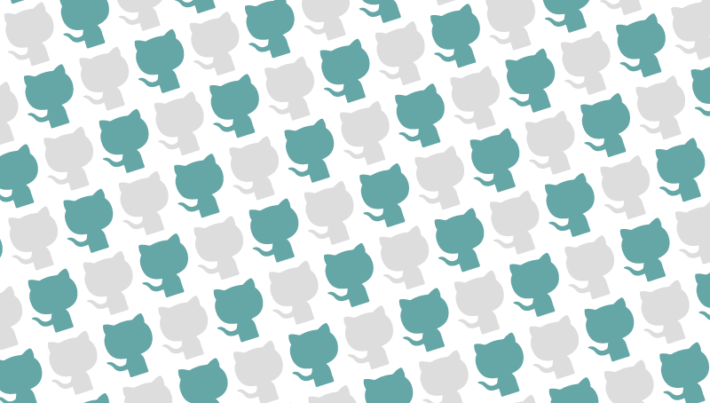

South Asia data sources
Growing list of govermental, research and other sources of data about India and the South Asia subcontinent.
Growing list of govermental, research and other sources of data about India and the South Asia subcontinent.
A list of community groups and resources for young and early-career data journalists. Made with Madi Alexander for #NICAR18.

Pitched and gave a lightning talk at #NICAR17 about physical self-care as a developer, journalist, or just someone who sits at a computer all day. Here are my slides and speaker notes.
My friend Eunice and I gave a talk to a freshman multimedia reporting class about why they should learn how to code, using Learn.KnightLab, the tutorial website I worked on.
The design process sometimes seems like a drag, but it can help you save time and create a well-developed project! And here's the kicker; you're probably already following the process in your daily life.
I've been using Sublime Text for about a year now. Here are some tips and tricks I've accumulated over time to make my coding more efficient (and hopefully yours too).

It's no secret that I love GIFs. I led a workshop at the Knight Lab to teach students how to make GIFs using Giphy Capture and Photoshop.